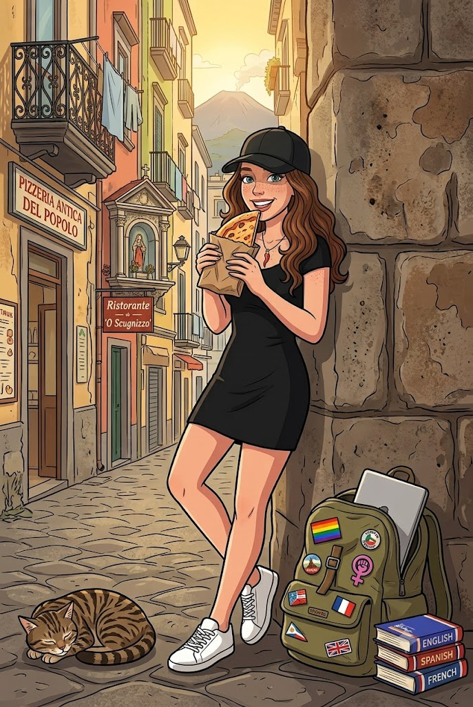

Sono Sara, sono italiana e vivo a Parigi dal 2020. Appassionata di culture diverse e di lingue, ho iniziato il mio percorso universitario studiando cultura inglese e spagnola, e poi, per quei giri un po’ imprevedibili che prende la vita, mi sono ritrovata a parlare francese e portoghese. Ed è proprio questa passione per le lingue che, alla fine, mi ha fatto incontrare Jo. Ho mille interessi, che coltivo a fasi alterne: posso essere una viaggiatrice avventurosa, sempre pronta a partire, oppure trasformarmi in una nonnina felice con i suoi lavori all’uncinetto. Adoro gli animali e mi piace leggere di psicologia, diritti umani e femminismo: temi su cui è facilissimo coinvolgermi in una discussione. Mi definirei una persona comprensiva, paziente e calma. Non sono molto festaiola, ma ho una passione assoluta per la pizza. Cresciuta in una famiglia di informatici, ho sempre avuto una naturale dimestichezza con la tecnologia: sono curiosa, veloce e mi piace capire come funzionano le cose, infatti eccomi qui a creare questo Blog per Jordan dopo aver svolto il mio bootcamp di development web!
PASSIONI